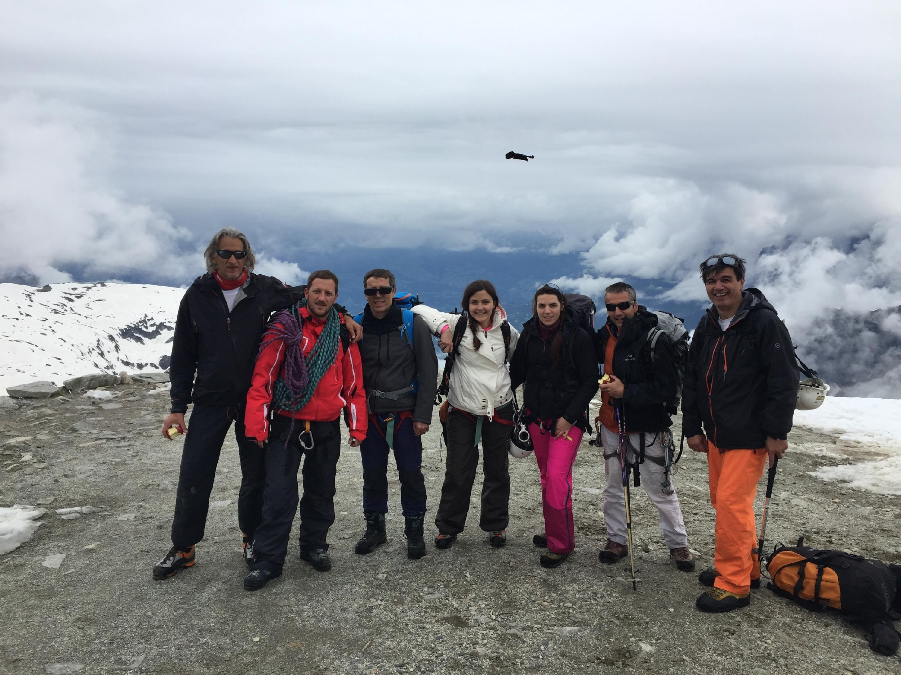
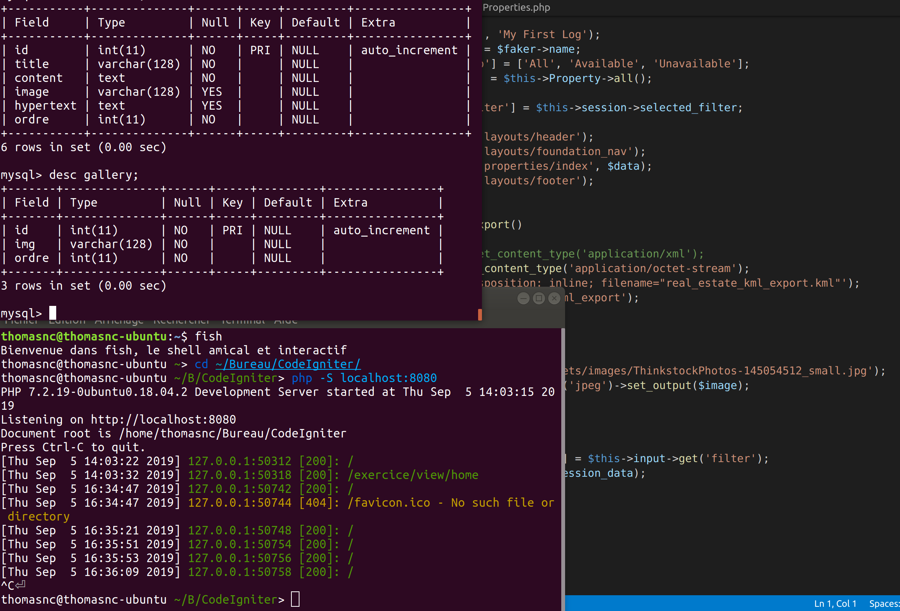

Stage Développement Web pour l'association
"Tous Au Sommet"
20/07/2019 - 07/09/2109
Présentation rapide de l'association
Tous au Sommet est une organisation à but non lucratif née en mars 2016,
et dont le but est d'organiser des séjours sportifs à sensations fortes pour des personnes en
situation de handicap et les aider dans leur parcours de reconstruction.
L'association essaie d'organiser 3 à 4 voyages à la montagne par an, ce qui permet
aux patients en réhabilitation/rééducation et pratiquer des activités auxquelles ils
n'auraient pas forcément accès le reste de l'année.
Cependant ces voyages ne sont pas gratuits et les solutions de financement d'une organisation
à but non lucratif son limitées aux dons, côtisations des adhérents et
partenariats avec des marques (comme décathlon par exemple).
C'est la qu'arrive ma mission: créer le site web de l'association et le référencer pour pouvoir
obtenir plus de visibilité, et à terme plus de fonds pour organiser les voyages.
On voit sur la photo à droite à quoi ressemble un voyage au Mont Blanc.
(ps: on peut apercevoir mon père tout à droite de l'image)


La mission
Faire un simple site de présentation en HTML/CSS aurait bien peu d'intérêt,
même si, sur papier, un site vitrine reste toujours très utile peu importe
la difficulté de réalisation (comme en témoigne mon site dont le trafic rendrait facebook jaloux...).
Il fallait donc ajouter un peu de piment et de complexité à la création de ce site. Et ce
par la création d'un espace administration qui permettra aux gérants de l'association d'ajouter, modifier
ainsi que supprimmer des contenus sans avoir la moindre connaissance des technologies utilisées
dans le web. Un peu comme un petit wordpress très personel et très limité dans les options.
La première étape fut d'abord de discuter avec les membres et recueillir les besoins afin d'établir un cahier
des charges. Ensuite, pour ce qui est de la stack technique, j'ai choisi le framework PHP "Codigniter",
qui est un framework à mon sens bien adapté à l'échelle du projet. C'est à dire qu'il n'est pas
du tout aussi lourd et dur à prendre en main que les leaders du marché (Symfony et Laravel), mais
il offre tout de même une variété de fonctionalités et outils qui font gagner un temps conséquent.
Pour tout ce qui est data, nous avons opté pour MySQL.